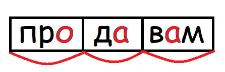
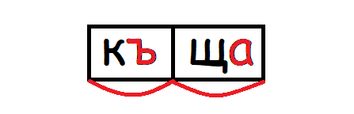
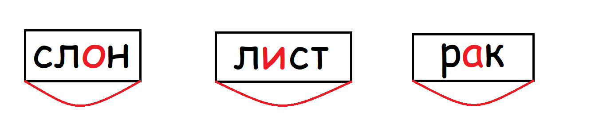
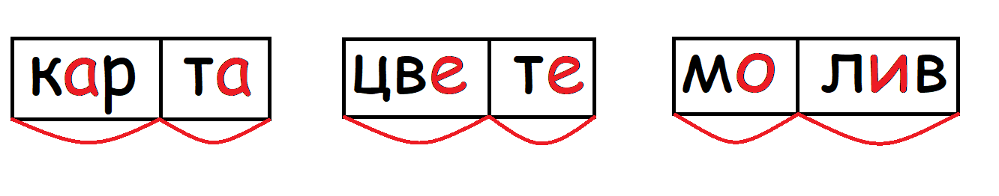
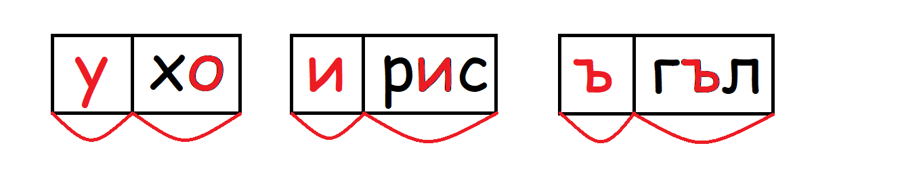

В българския език сричката се състои от гласни и съгласни звукове. С помощта на сричките се образуват думи. В една сричка съществува само един гласен звук. Това означава, че броят на сричките в една дума е равен на броя на гласните й звукове.
 
Сричките се разделят на следните типове:
Примери:

Примери:


По-надолу са изобразени кубчета със срички по стените. За да движите едно кубче, натиснете с ляв бутон на мишката върху него и го влачете. За да завъртите кубчето, натиснете с десен бутон върху него и движете мишката.
Упражнение 2: Меката сричка е ля.
Упражнение 3: Червеното кубче съдържа 1 дума: пла-то.
Зеленото кубче съдържа 3 думи: по-ка-жи, ре-жи, ка-жи.
Синьото кубче съдържа 7 думи: мо-я, мо-ля, пи-ля, пи-я, мо-мък, пи-ла, ла-я.
Отговорът е: синьото кубче.
Упражнение 4: Затворените срички са две: мък и тел.